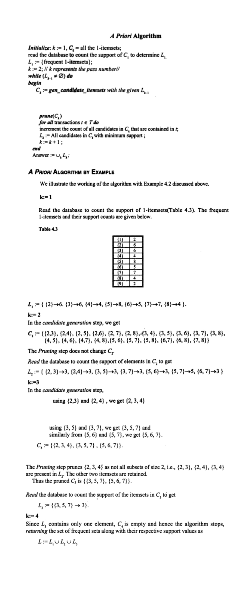

Q3 Explain Apriori Algorithm with example.
Answer:
Apriori is a seminal algorithm proposed by R. Agrawal and R. Srikant in 1994 for mining frequent itemsets for Boolean association rules. The name of the algorithm is based on the fact that the algorithm uses prior knowledge of frequent itemset properties, as we shall see later. Apriori employs an iterative approach known as a level-wise search, where k-itemsets are used to explore (k + 1)-itemsets. First, the set of frequent 1-itemsets is found by scanning the database to accumulate the count for each item, and collecting those items that satisfy minimum support. The resulting set is denoted by L1. Next, L1 is used to find L2, the set of frequent 2-itemsets, which is used to find L3, and so on, until no more frequent k-itemsets can be found. The finding of each Lk requires one full scan of the database. To improve the efficiency of the level-wise generation of frequent itemsets, an important property called the Apriori property is used to reduce the search space.
Apriori property: All nonempty subsets of a frequent itemset must also be frequent
“How is the Apriori property used in the algorithm?” To understand this, let us look at how Lk−1 is used to find Lk for k ≥ 2. A two-step process is followed, consisting of join and prune actions.
1. The join step: To find Lk , a set of candidate k-itemsets is generated by joining Lk−1 with itself. This set of candidates is denoted Ck . Let l1 and l2 be itemsets in Lk−1. The notation li[j] refers to the jth item in li (e.g., l1[k − 2] refers to the second to the last item in l1).
2. The prune step: Ck is a superset of Lk , that is, its members may or may not be frequent, but all of the frequent k-itemsets are included in Ck . A database scan to determine the count of each candidate in Ck would result in the determination of Lk (i.e., all candidates having a count no less than the minimum support count are frequent by definition, and therefore belong to Lk).
